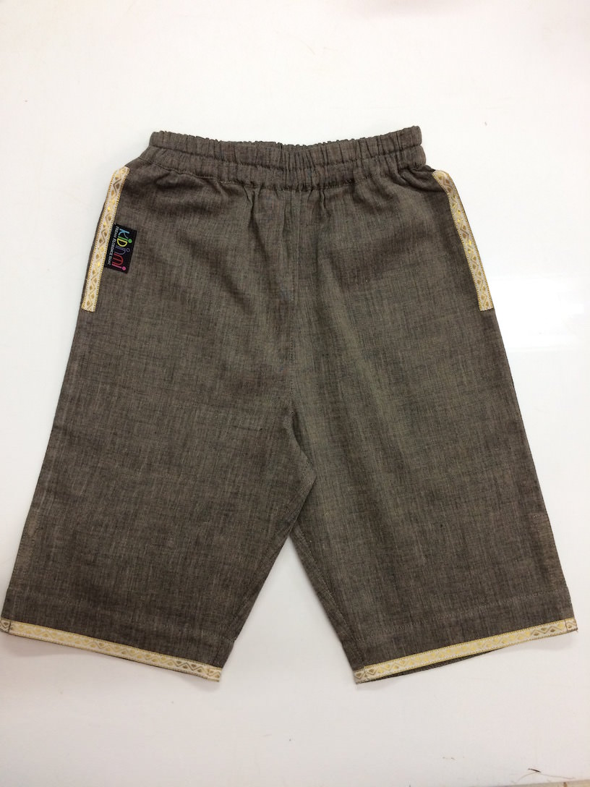
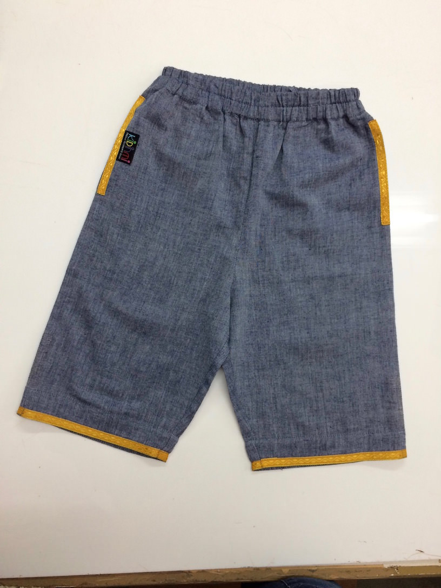
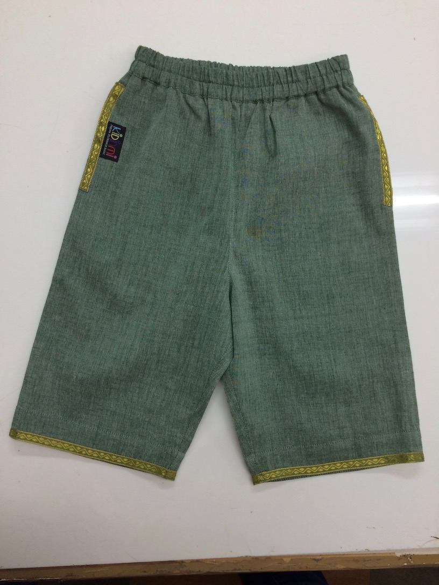
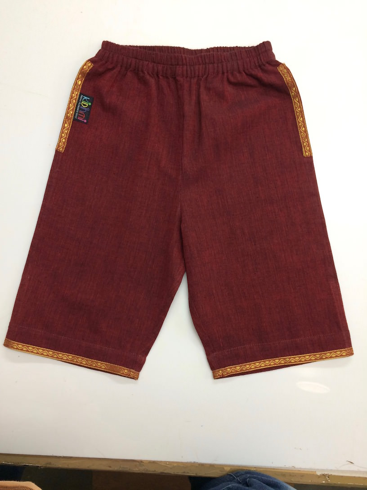

It's Magic! - Half Pant - Colour Options
Each Half Pant has a matching
Yuvraj Tunic
, which can be purchased together as a
Yuvraj Set
.
Two-Tone Grey with White Trim

Two-Tone Jean with Yellow Trim

Two-Tone Green with Green Trim

Two-Tone Bordeaux with Brown Trim
